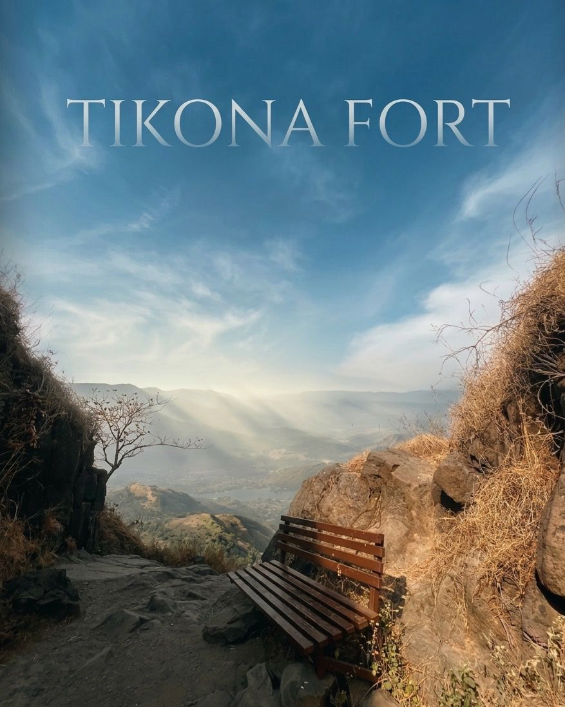
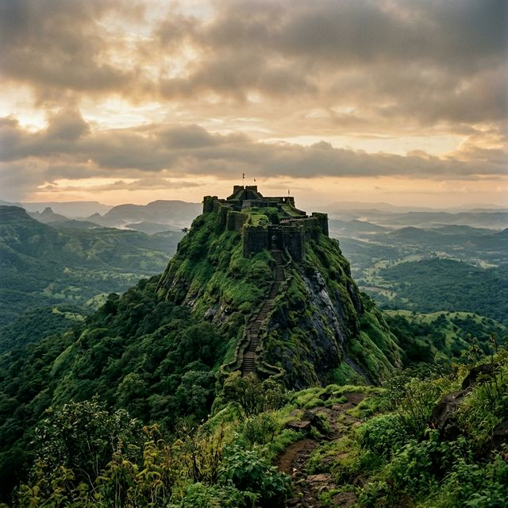
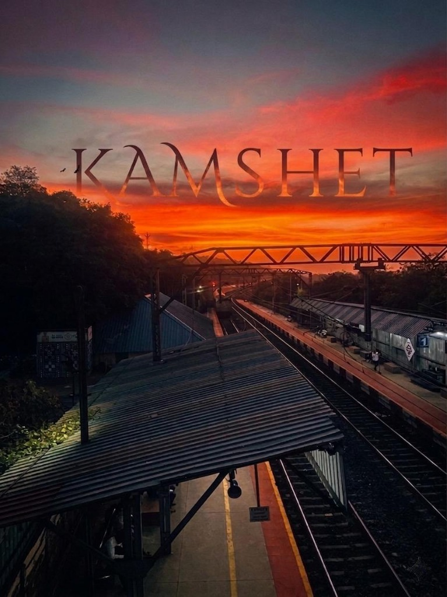

They call it Tikona, the triangle, a geometric anomaly rising sharply from the Maval plains. To the Marathas, it was Vitandgad—a watchful eye over the Pawana valley. We began our ascent when the dew was still heavy on the grass, the trail winding through the base village of Tikonapeth, where life moves at the pace of the seasons.

A moment of quiet reflection—the lone bench overlooking the sun-drenched valley.
"Some forts are built to defend land; others are built to touch the sky. Tikona does both with a silent, stony grace."
The climb is more than a physical effort; it is a negotiation with history. You pass through massive gates that have stood since the 17th century, their hinges long gone but their authority intact. The Satvahan caves, carved into the cliffside, offer a momentary cool reprieve—a reminder that monks sought solitude here centuries before the first Maratha flag was ever hoisted.

The near-vertical stone steps leading to the upper ramparts.
And then, the steps. Narrow, steep, and carved directly into the basalt, they force you into a rhythmic, prayer-like crawl. At the summit, beside the ancient Trimbakeshwar Mahadev temple, the world opens up. The Pawana lake shimmers like a fallen silver coin, and the surrounding forts—Lohagad, Visapur, Tung—stand like sentinels in the distance.
Tikona doesn't boast the size of Raigad or the complexity of Janjira. Its beauty lies in its simplicity—a perfect pyramid of rock, a sanctuary of wind and stone, and a testament to a time when the mountains were the greatest allies of a budding empire.

The magic hour at Kamshet—where the sky meets the tracks in a blaze of gold.
Waiting for the sun to dip below the horizon at Kamshet was a lesson in patience. The sky transformed from a pale blue to a burning orange, casting long, dramatic shadows. It was in that moment of absolute stillness that the essence of the journey truly sank in.
"The sunset took all the pain and gave a hope for a new day"